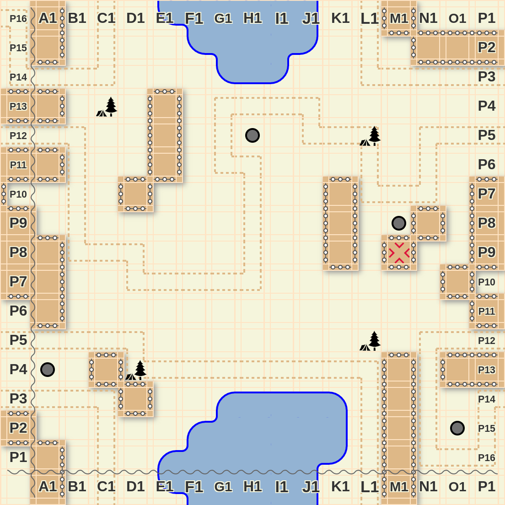

"At some point we discovered that we had been inside a computer game the whole time and that we could just enter an appropriate URL to go to any location that we wanted. This made us lose interest in our original exploration goal, but anyway, since travelling became so easy we did finish the exploration, just for the sake of completeness. Look, we also drew a map of the land and the old path that used to traverse it, in case you are interested."
You are on top of a mountain.